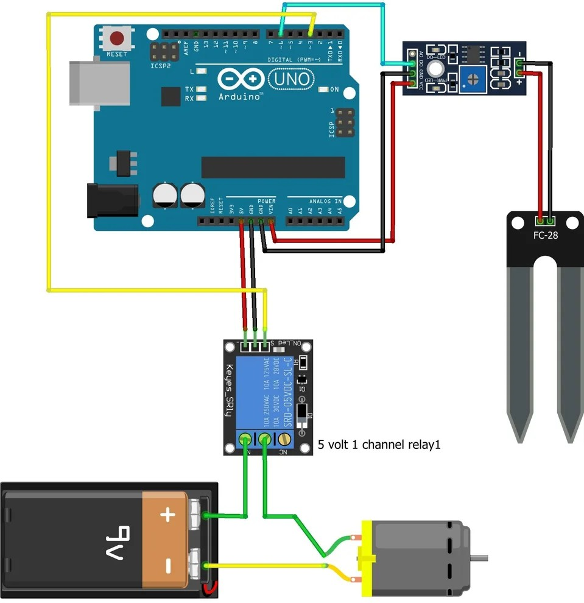

Smart Sprout
Smart Sprout is an automatic plant watering system I built using an Arduino Uno, a soil moisture sensor, and a small submersible pump. The goal of the project was to solve a common problem — forgetting to water plants on time, which often leads to dry or unhealthy plants. By using inexpensive and widely available electronic components, I designed a system that continuously monitors soil moisture levels and automatically activates the pump whenever the soil becomes too dry. This allows plants to stay properly hydrated even when left unattended for weeks.
The system works by placing the moisture sensor in the soil, which feeds real-time data to the Arduino. When the sensor detects low water levels, the Arduino triggers the relay module to power the pump, which circulates water until the desired moisture is reached. Once the soil is hydrated, the pump automatically shuts off. The project not only demonstrates practical use of microcontrollers, sensors, and relays but also showcases how simple electronics can be applied to everyday problems. Smart Sprout represents a scalable and beginner-friendly solution for anyone looking to automate plant care.